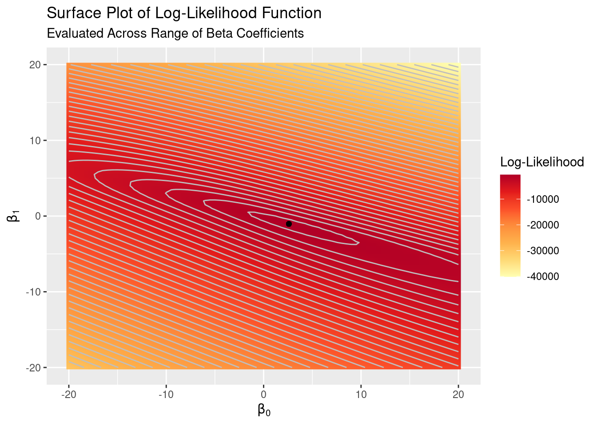
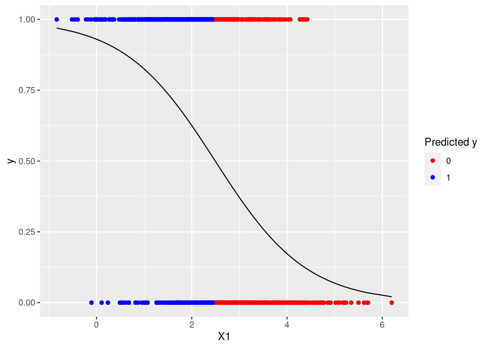

Testing
Comparing to glm
We can easily check the coefficients we’ve calculated against those produced by R’s glm. By default glm uses IRLS to fit models.
glm_model <- glm(y ~ X1, data = as.data.frame(data_matrix), family = "binomial")beta_vec_irls## [,1]
## Int 2.589805
## X1 -1.038948beta_vec_mod## [,1]
## Int 2.589805
## X1 -1.038948glm_model$coefficients## (Intercept) X1
## 2.589805 -1.038948The Log-Likelihood Surface
We can also use the log-likelihood surface plot to (approximately) verify that the coefficients we estimated are correct and that the logistic regression estimates do maximize the log-likelihood function by plotting the point for our estimates on the surface plot:
likelihood_surface_plot <- likelihood_surface_plot +
geom_point(aes(x = beta_vec_mod[1], y = beta_vec_mod[2]))
Plotting the Logistic Fit
To get the classic logistic regression plot we can calculate
for all \(x_i\) and plot those probabilities as a line against the data points on the \((x, y)\) plane. We’ll also color-code the points by how our model fit classifies the points, using the decision rule that an observation is classified to \(\hat{Y} = 0\) if \(\Pr (Y = 1 | X = x_i; \vec{\beta}) < 0.5\) and \(\hat{Y} = 1\) otherwise.
pred_prob <- exp(data_matrix[, 2:3] %*% beta_vec_mod) /
(1 + exp(data_matrix[, 2:3] %*% beta_vec_mod))
data_tibble <- as_tibble(data_matrix)
data_tibble$pred_prob <- pred_prob[,1]
data_tibble$pred <- if_else(data_tibble$pred_prob < .5, 0, 1)
logistic_plot_preds <- ggplot(data_tibble) +
geom_point(aes(X1, y, color = as.factor(pred))) +
geom_line(aes(X1, pred_prob)) +
scale_color_manual(name = "Predicted y",
values = c("red", "blue"))